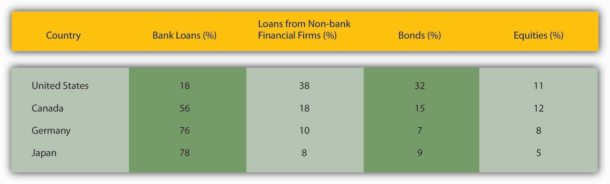

Thus far, we have spent a lot of time discussing financial markets and learning how to calculate the prices of various types of financial securities, including stocks and bonds. Securities markets are important, especially in the U.S. economy. But you may recall from Chapter 2 "The Financial System" that the financial system connects savers to spenders or investors to entrepreneurs in two ways, via markets and via financial intermediaries. It turns out that the latter channel is larger than the former. That’s right, in dollar terms, banks, insurance companies, and other intermediaries are more important than the stock and bond markets. The markets tend to garner more media attention because they are relatively transparent. Most of the real action, however, takes place behind closed doors in banks and other institutional lenders.
Not convinced? Check out Figure 8.1 "Sources of external finance for nonfinancial companies in four financially and economically developed countries", which shows the sources of external funds for nonfinancial businesses in four of the world’s most advanced economies: the United States, Germany, Japan, and Canada. In none of those countries does the stock market (i.e., equities) supply more than 12 percent of external finance. Loans, from banks and nonbank financial companies, supply the vast bulk of external finance in three of those countries and a majority in the fourth, the United States. The bond market supplies the rest, around 10 percent or so of total external finance (excluding trade creditCredit granted in the course of trade, as when suppliers ship their wares, then bill net 15 or 30, or when customers, like libraries for academic journals, pay for goods or services before they are provided.), except in the United States, where bonds supply about a third of the external finance of nonfinancial businesses. (As we’ll learn later, U.S. banking has been relatively weak historically, which helps to explain why the bond market and loans from nonbank financial companies are relatively important in the United States. In short, more companies found it worthwhile to borrow from life insurance companies or to sell bonds than to obtain bank loans.)
Figure 8.1 Sources of external finance for nonfinancial companies in four financially and economically developed countries
As noted above, the numbers in Figure 8.1 "Sources of external finance for nonfinancial companies in four financially and economically developed countries" do not include trade credit. Most companies are small and most small companies finance most of their activities by borrowing from their suppliers or, sometimes, their customers. Most such financing, however, ultimately comes from loans, bonds, or stock. In other words, companies that extend trade credit act, in a sense, as nonbank intermediaries, channeling equity, bonds, and loans to small companies. This makes sense because suppliers usually know more about small companies than banks or individual investors do. And information, we’ll see, is key.
Also note that the equity figures are somewhat misleading given that, once sold, a share provides financing forever, or at least until the company folds or buys it back. The figures above do not account for that, so a $1,000 year-long bank loan renewed each year for 20 years would count as $20,000 of bank loans, while the sale of $1,000 of equities would count only as $1,000. Despite that bias in the methodology, it is clear that most external finance does not, in fact, come from the sale of stocks or bonds. Moreover, in less economically and financially developed countries, an even higher percentage of external financing comes to nonfinancial companies via intermediaries rather than markets.
What explains the facts highlighted in Figure 8.1 "Sources of external finance for nonfinancial companies in four financially and economically developed countries"? Why are bank and other loans more important sources of external finance than stocks and bonds? Why does indirect finance, via intermediaries, trump direct finance, via markets? For that matter, why are most of those loans collateralizedTo pledge some asset, like land or financial securities, for the repayment of a loan.? Why are loan contracts so complex? Why are only the largest companies able to raise funds directly by selling stocks and bonds? Finally, why are financial systems worldwide one of the most heavily regulated economic sectors?
Those questions can be answered in three ways: transaction costs, asymmetric information, and the free-rider problem. Explaining what those three terms mean, however, will take a little doing.